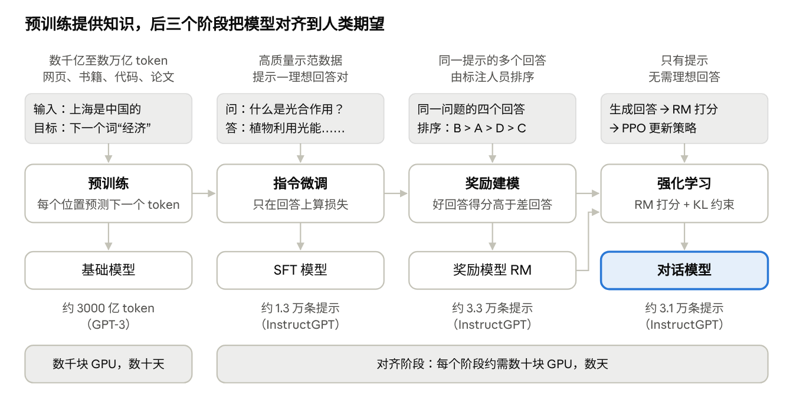
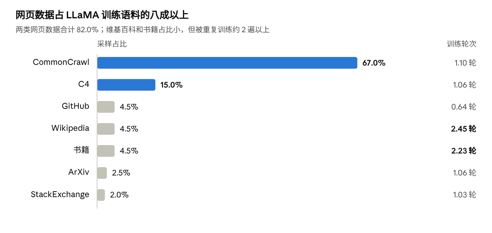

2.4 模型构建
以 ChatGPT 为代表的对话模型，构建过程包含四个阶段：预训练、有监督微调、奖励建模和强化学习。第一阶段让模型”学到知识”，消耗了绝大部分算力；后三个阶段让模型”学会说话”，即把模型的行为对齐到人类的期望，统称对齐（Alignment）。这一流程由 OpenAI 在 2022 年的 InstructGPT 工作中系统化。

图 2-7 · 对话模型构建的四个阶段（数据规模取自 GPT-3 与 InstructGPT 论文）
每个阶段都在上一阶段产出的模型上继续训练；奖励模型不直接给用户使用，只在强化学习阶段充当裁判。
| 阶段 | 数据 | 训练目标 | 产出 | 典型资源 |
|---|---|---|---|---|
| 预训练 | 数千亿至数万亿 token 的互联网网页、书籍、代码、论文 | 预测下一个 token | 基础模型（Base Model） | 数千块 GPU，数十天 |
| 有监督微调 | 数万条高质量”提示—理想回答”对 | 在回答部分预测下一个 token | SFT 模型 | 数十块 GPU，数天 |
| 奖励建模 | 同一提示下多个回答的人工排序 | 让好回答的得分高于差回答 | 奖励模型（RM） | 数十块 GPU，数天 |
| 强化学习 | 数万至十万量级的提示，无需理想回答 | 最大化奖励，同时不偏离 SFT 模型太远 | RL 模型（即最终的对话模型） | 数十块 GPU，数天 |
2.4.1 预训练
预训练利用海量数据，包括互联网网页、维基百科、书籍、GitHub 代码、论文、问答网站等，构建数千亿乃至数万亿词的多样化语料。训练在由数千块高性能 GPU 和高速网络组成的超级计算机上进行，花费数十天完成参数训练，得到基础模型。
以 GPT-3 为例，一次完整训练的计算量约为 3640 PF-days（即每秒 10^15 次运算连续运行 3640 天），约合 3.14 × 10^23 次浮点运算。用 2.2.2 节的公式核对：C ≈ 6 × 1750 亿 × 3000 亿 token ≈ 3.15 × 10^23，两者几乎完全一致。如果用 1000 块 A100、平均利用率 50%，每秒可完成 1000 × 312 × 10^12 × 0.5 ≈ 1.56 × 10^17 次运算，需要约 2.0 × 10^6 秒，即 23 天左右，接近一个月。
预训练得到的基础模型知识丰富，但它只会”续写”，不会”回答”。例如输入”中国的首都是哪里？“，基础模型很可能接着写出”美国的首都是哪里？日本的首都是哪里？“，因为在网页上这样的问题常常是一串考题。让它学会”听指令”，是后续三个阶段的任务。
一、预训练数据的处理流水线
“数据决定模型上限”在预训练阶段体现得最为明显。互联网原始数据量巨大，但质量参差不齐：导航栏、广告、乱码、机器生成的垃圾页面、大量重复内容。以公开网页抓取项目 Common Crawl 为例，它自 2008 年起累积了数 PB 的网页，但只有很小一部分能直接用于训练。一条典型的数据处理流水线包括：
正文抽取：从 HTML 中提取正文，去掉导航栏、页脚、广告等模板内容。
语言识别：用轻量分类器（如 fastText）判断每篇文档的语言，按语言分桶。
质量过滤：先用启发式规则去掉明显的低质量文本，如过短的文档、符号占比过高的文档、大量重复行的文档；再用模型打分，例如训练一个区分”像维基百科”和”像随机网页”的分类器，或用一个小语言模型计算困惑度，只保留得分较高的部分。
去重：用哈希去掉完全相同的文档和段落，用 MinHash 等近似算法去掉高度相似的文档。重复数据不仅浪费算力，还会让模型死记硬背，增加泄露训练数据的风险。
安全与隐私：过滤有害内容，并用正则表达式或模型去除邮箱、电话、证件号等个人信息。
去除测试集污染：删除与常用评测基准重叠的内容，否则模型可能在评测中”背答案”，分数虚高。
分词与打包：用 2.1.5 节的分词器转为 token，文档之间插入结束符，拼接并切分成固定长度（如 4096 个 token）的训练样本。
二、数据配比
不同来源的数据要按一定比例混合。图 2-8 是 Meta 公开的 LLaMA 训练配比。

图 2-8 · LLaMA（Touvron 等，2023）预训练数据配比，共约 1.4 万亿 token
从配比中可以看出两个常见做法。第一，网页数据提供了规模和多样性，是语料的主体。第二，维基百科和书籍这类高质量数据总量有限，就通过多轮重复来提高它们的权重；代码数据虽然与自然语言不同，却被普遍认为有助于提升模型的逻辑和推理能力。近年来的趋势是质量比数量更重要：微软的 Phi 系列用精选和合成的”教科书级”数据，让小模型达到了远超其规模的效果。与此同时，也有研究者担忧，人类公开的高质量文本可能在未来几年内被用尽，这被称为”数据墙”问题，合成数据因此成为重要的研究方向。
2.4.2 指令微调
有监督微调（Supervised Fine-Tuning，SFT）使用少量高质量数据，每条数据包含用户输入的提示词（Prompt）和对应的理想输出。训练算法与预训练相同，仍是预测下一个 token，但通常只对回答部分计算损失：
\[\mathcal{L}_{SFT} = - \sum_{t = 1}^{|y|}\log P_{\theta}(y_{t} \mid x,\, y_{< t})\]
其中 x 是提示，y 是理想回答。这样模型学的是”如何回答”，而不是”如何提问”。这个过程也称为指令微调（Instruction Tuning）。InstructGPT 的 SFT 数据只有约 1.3 万条提示，相比预训练的数千亿 token 微不足道，却能显著改变模型的行为。这说明 SFT 主要是在教模型”以什么格式和风格调用已有知识”，而不是灌输新知识。
一条 SFT 数据在送入模型之前，会被套进一个对话模板，用特殊标记区分系统提示、用户和助手的发言。不同模型的标记写法不同，下面是一个示意：
<|system|>你是一个乐于助人的助手。
<|user|>用一句话解释什么是光合作用。
<|assistant|>光合作用是植物利用光能，把二氧化碳和水转化为有机物并释放氧气的过程。<|end|>
训练时，整段文本都作为输入，但只有 <|assistant|> 之后的 token（包括结束标记 <|end|>）计入损失，前面系统提示和用户问题部分的损失权重被置为 0，这称为损失掩码。让模型学会生成结束标记也很重要，否则它会在回答完之后继续自说自话，甚至替用户提出下一个问题。
SFT 数据的来源主要有三类：
人工撰写：由标注人员针对真实用户问题写出示范回答，质量最高，成本也最高。InstructGPT 的 SFT 数据大多来自这种方式。
由已有数据集改写：把分类、问答、翻译等传统 NLP 数据集套上指令模板，如 Google 的 FLAN 系列。
由更强的模型生成：斯坦福的 Alpaca（2023）用强模型自动生成了 5.2 万条指令数据，以不到 600 美元的成本微调出了一个可用的对话模型。这种做法本质上是知识蒸馏。
数据需要多少？Meta 的 LIMA 工作（2023）给出了一个惊人的答案：只用 1000 条精心挑选的高质量样本微调 65B 的 LLaMA，效果就已经相当不错。作者据此提出了”表面对齐假说”：模型的知识和能力几乎全部在预训练中获得，对齐主要是教会它用什么格式和风格与用户交互。由此引出一个工程原则：SFT 数据的质量和多样性远比数量重要。另外，全参数微调成本很高，实践中常用 LoRA 等参数高效微调方法，只训练一小部分新增参数，这部分内容见第三章。
经过训练的 SFT 模型具备了初步的指令理解和上下文理解能力，能完成开放领域问答、阅读理解、翻译、代码生成等任务，也具备一定的对未知任务的泛化能力。根据模型大小和数据量，通常需要数十块 GPU 训练数天。SFT 模型已经可以开放给用户使用，许多开源对话模型就停留在这一阶段。
2.4.3 奖励建模
SFT 有一个局限：它只能模仿示范回答，而写出一个完美的回答很难。对人类来说，判断哪个回答更好，远比亲自写出最好的回答容易。奖励建模正是利用了这一点。
具体做法是：对同一个提示，让 SFT 模型生成多个不同回答（InstructGPT 中为 4 至 9 个），由标注人员按质量排序。排序结果被拆成若干”好回答 y_w 优于差回答 y_l”的对子，用来训练一个打分模型 r(x, y)。训练目标是让好回答的得分高于差回答：
\[\mathcal{L}_{RM} = - \,\mathbb{E}_{(x,y_{w},y_{l})}\left\lbrack \log\sigma(r(x,y_{w}) - r(x,y_{l})) \right\rbrack\]
其中 σ 是 sigmoid 函数。这个形式来自统计学中的 Bradley–Terry 模型，它把”A 胜过 B 的概率”建模为两者得分差的 sigmoid。奖励模型通常从 SFT 模型初始化，把输出层换成一个输出标量分数的线性层。
算例：从一次排序到一组损失
对提示”如何学好线性代数？“，SFT 模型生成了 A、B、C、D 四个回答，标注人员给出的排序是 B > A > D > C。从 4 个回答中任取 2 个，共有 C(4, 2) = 6 个偏好对：(B, A)、(B, D)、(B, C)、(A, D)、(A, C)、(D, C)，每对中前者更好。一次排序的标注工作量，换来了 6 条训练样本。
以 (B, A) 这一对为例，损失只取决于得分差 Δ = r(B) − r(A)：
| 奖励模型当前的打分 | Δ = r(B) − r(A) | 损失 −log σ(Δ) | 含义 |
|---|---|---|---|
| 明显偏向 B | 1.2 | 0.263 | 已经判断正确，损失小 |
| 略微偏向 B | 0.3 | 0.554 | 方向对但不够确信 |
| 偏向 A | −0.5 | 0.974 | 判断反了，损失大，梯度会把 r(B) 推高、r(A) 压低 |
注意，奖励模型只学习得分之差，得分的绝对数值没有意义。这也意味着它学到的是标注人员的偏好，而不是客观的”好坏”：如果标注人员倾向于喜欢更长、更自信的回答，奖励模型也会继承这一偏好。InstructGPT 还发现，把同一提示产生的所有偏好对放在同一个批次中训练，可以避免奖励模型过拟合，它的奖励模型规模为 60 亿参数。
与基础模型和 SFT 模型不同，奖励模型本身不能单独提供给用户使用，它只是下一阶段的”裁判”。奖励模型的训练与 SFT 类似，通常使用数十块 GPU 训练数天。
2.4.4 强化学��
强化学习阶段把前三个阶段的成果组合起来。对于来自用户的大量提示，SFT 模型生成回答，奖励模型给出质量评分，再用强化学习算法更新模型参数，让高分回答的概率变大。这就是基于人类反馈的强化学习（RLHF）。常用算法是 PPO（近端策略优化），优化目标为：
\[\max_{\pi_{\theta}}\ \mathbb{E}_{x \sim \mathcal{D},\, y \sim \pi_{\theta}( \cdot \mid x)}\left\lbrack r(x,y) \right\rbrack - \beta\, KL\left( \pi_{\theta}( \cdot \mid x)\, \parallel \,\pi_{SFT}( \cdot \mid x) \right)\]
第一项让模型追求高奖励。第二项是 KL 散度惩罚，它限制模型不能偏离 SFT 模型太远，这就是课件中所说的”与语言模型建模目标综合”。如果没有这一项，模型会发现奖励模型的漏洞并加以利用，例如生成越来越长、堆砌套话但得分很高的回答，这称为奖励破解（Reward Hacking）。
这一阶段的提示数量与 SFT 阶段类似，但不需要人工提前写出理想回答。计算量远小于预训练，通常也只需数十块 GPU 训练数天。效果很显著：InstructGPT 论文报告，经过 RLHF 的 13 亿参数模型，其回答比 1750 亿参数的 GPT-3 更受标注人员偏爱。
展开来看，PPO 的一次迭代要协调四个模型，其中两个参与训练、两个参数冻结。
采样：从提示集中取一批提示 x，策略模型（Actor）为每个提示生成回答 y。
打分：奖励模型对完整的 (x, y) 给出一个标量分 r。
计算 KL 惩罚：参考模型就是冻结的 SFT 模型。对回答中的每个 token，比较策略模型与参考模型给出的对数概率，差值越大，说明策略模型偏离得越远，惩罚越大。最终奖励为 R = r − β · KL。
估计优势：价值模型（Critic）预测在回答的每个位置上”期望还能拿到多少奖励”。实际奖励比预期高，说明这一步的选择比平均水平好，优势 A 为正；反之为负。常用的估计方法是广义优势估计（GAE）。
更新：按 PPO 的裁剪目标更新策略模型，提高优势为正的 token 的概率、降低优势为负的 token 的概率；同时用实际回报回归更新价值模型。
PPO 的裁剪目标是：
\[\mathcal{L}^{CLIP}(\theta) = \mathbb{E}_{t}\left\lbrack \min\left( \rho_{t}A_{t},\ clip(\rho_{t},1 - \epsilon,1 + \epsilon)\, A_{t} \right) \right\rbrack\]
\[\rho_{t} = \frac{\pi_{\theta}(y_{t} \mid x,y_{< t})}{\pi_{\theta_{old}}(y_{t} \mid x,y_{< t})}\]
其中 ρ_t 是新旧策略对同一个 token 给出的概率之比，ε 通常取 0.2。裁剪项抑制概率比越界后继续增大代理目标的收益，以减少过大更新，但不保证概率变化严格限于 ±20%。这与 KL 惩罚的分工不同：KL 惩罚约束当前策略相对 SFT 参考模型的偏离，PPO 裁剪则抑制相对采样旧策略的过大更新。
PPO 效果好但工程复杂：四个模型同时驻留显存，超参数敏感，训练容易不稳定。这正是后来 DPO（去掉奖励模型和强化学习）和 GRPO（去掉价值模型，用同一提示下一组回答的平均得分作为基线）等方法被提出的动机。
RLHF 之后，对齐技术持续演进。直接偏好优化（DPO，2023）从数学上证明可以跳过奖励模型和强化学习，直接用偏好数据训练模型，大大简化了流程。DeepSeek-R1（2025）等推理模型则在数学、代码等答案可以自动验证的任务上，用规则给出的奖励替代人类打分，并采用 GRPO 等更轻量的算法进行大规模强化学习，让模型自发学会了长链推理。这些方法将在第三章详细介绍。